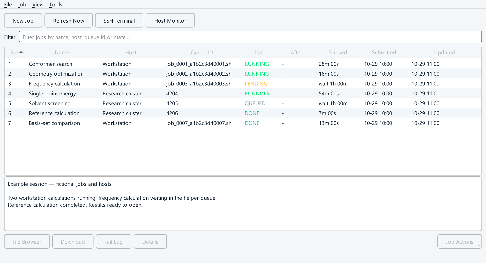
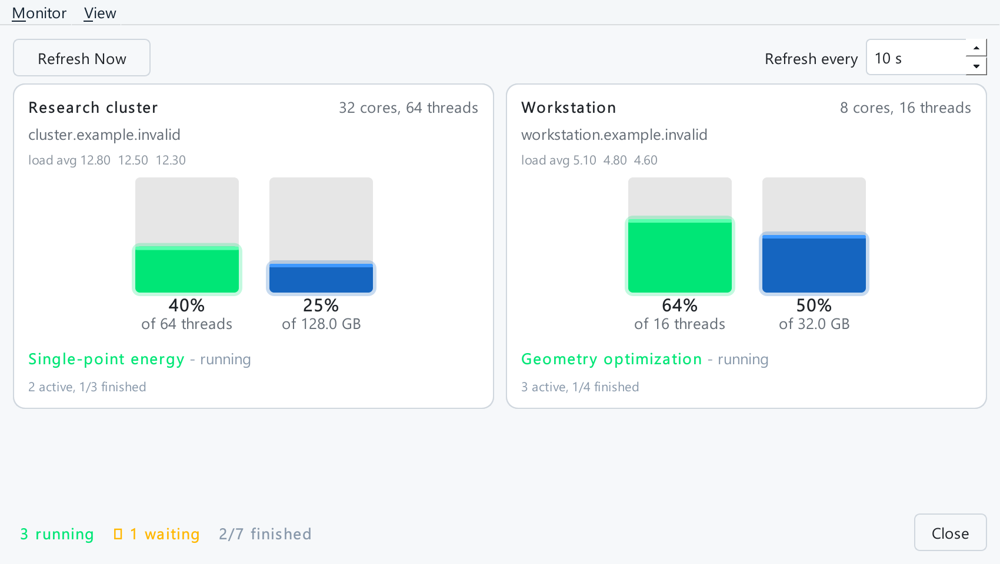

Prepare once. Submit anywhere.
Choose a host, add inputs and reuse a command template or preset. Submit from the desktop, an input generator or the local API.
INPUTS / PRESETS / TEMPLATESThe computational companion to MoleditPy
From a single workstation to a research cluster. Submit calculations, share resources and bring results home — in one place, with or without an AI agent.

Your calculation. Your destination.
01 / From input to insight
A consistent workflow across your own machine, remote workstations and cluster schedulers.
Choose a host, add inputs and reuse a command template or preset. Submit from the desktop, an input generator or the local API.
INPUTS / PRESETS / TEMPLATESFollow job states, inspect logs and check host CPU and memory. Get notified when a calculation finishes.
JOB STATES / LOGS / NOTIFICATIONSDownload outputs automatically and open them with an installed MoleditPy result analyzer. Keep or export your job history.
AUTO DOWNLOAD / ANALYSIS / EXPORT02 / Built for agent workflows
Let agents submit work through the local API. On a workstation, the shared helper queue schedules calculations within the CPU and memory budgets you set, helping prevent a flood of submissions from overloading the machine.
# Submit, wait, fetch results
python -m job_manager.api_client submit molecule.inp \
--host workstation \
--command "/opt/orca/orca {input} > {stem}.out" \
--cpus 4 --memory 16GB \
--wait
# Exit 0 if DONE, else 2Use the same host profile and helper queue, with accurate resource requests. Budgets schedule declared requests; they do not enforce process limits or account for unrelated applications. Force run bypasses budgets. Cluster destinations use their own scheduler. The API is opt-in, loopback-only, and requires Job Manager to be running.

03 / A view of the bigger picture
The Host Monitor puts CPU, memory and active jobs side by side. See where your work is running before deciding what to submit next.
04 / Fits the way you work
Use OpenSSH or paramiko for remote hosts, run locally with bash or PowerShell, connect to WSL, or use the LAN Job Server.
Connection guideSet CPU and memory budgets, chain dependent jobs, pause the helper queue or schedule a later start. Cluster jobs use the scheduler already in place.
How the helper worksLaunch as a MoleditPy plugin or a standalone desktop app. Use the same hosts, job history and settings, and return to the editor for result analysis.
Standalone setup05 / Ready for your next calculation
Free and open source. Start with the MoleditPy plugin, or run the desktop app independently.
In MoleditPy 5.x, open the Plugin Installer and install Job Manager from the official plugin collection. Or install the standalone desktop app with pip, no MoleditPy needed.
Open Extensions → Job Manager → Job Monitor → Hosts. Choose a backend and scheduler, configure resources, and test the connection.
Choose New Job, add your inputs and check the script preview. For automation, enable Local API and follow the API guide.
pip install moleditpy-job-manager
moleditpy-job-managerPython 3.10+. Add the [ssh] extra for paramiko or [job-server] for Job Server hosts. It shares hosts, job history and settings with the plugin. See Job Manager without MoleditPy.